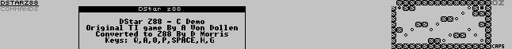
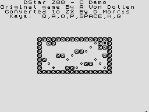
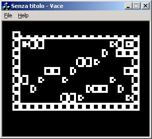
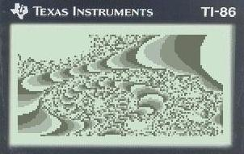
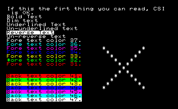
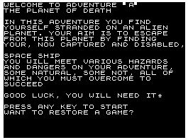

| Introduction |
z88dk runs on a wide variety of platforms. Most of
the development has been done under emulation, indeed only the z88 and TI
platforms are tested on `real' machines. On this page you'll find a variety
of screenshots of different programs on different platforms. |
| z88 |

DStar is a tricky puzzle game that was originally written in z80 for the TI86. I found it on ticalc.org and ported it over to C. It's since been ported over to many of the z88dk targets. The z88 version is a fully fledged z88 application, cooperating perfectly with the z88 operating system OZ. |
| ZX Spectrum |

Here's DStar running on the ZX Spectrum. All that was needed to port this from the z88 was a short routine to write the game map to the screen. |
| Jupiter Ace |

I promise that this is the last DStar picture! Here it is running on the Jupiter Ace. The blockiness is due to the fact that the Ace only has low resolution graphics (64x48). |
| TI Calculators |

This has to be one of my favourite screenshots. Stefano left the emulator running for quite a while to capture this greyscale picture of part of the mandelbrot set. |
| Sharp MZ |

The Sharp MZ running the VT100 test program. This program tests all features of the VT100 emulation. The asterix instead of an 'F' is I believe the hardware cursor. |
| ZX81 |

Adventure 'A' was one of the first adventure games available for the ZX81 and Spectrum. Paul Taylor converted it to C and made it run on multiple platforms (see the Planet Of Death page on his site). Naturally it had to be ported over to z88dk. Very few changes needed to be made, and here it is, running on the ZX81 once more! |
| z88dk/screenshots.html |
Last Updated 20/1/2002 by dom |